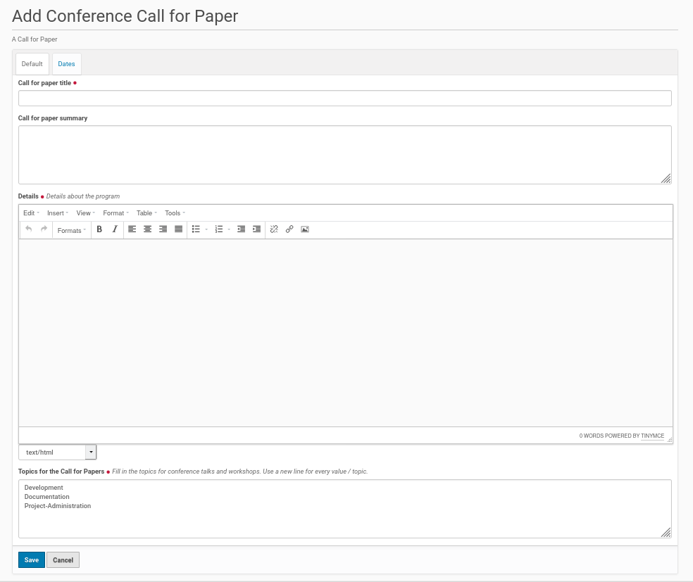
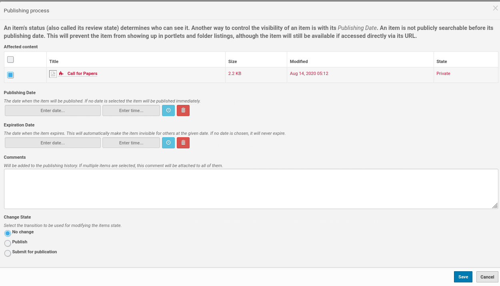
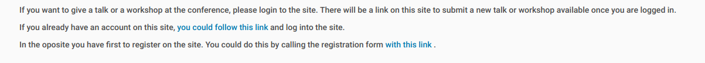
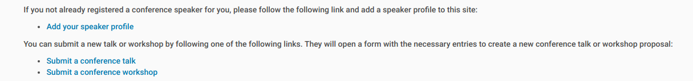

Call For Paper Page¶
A page for the usual call for papers could be added to the root of the Plone site. Thus click on the ‘Home’ entry in the menu and choose from the menu on the left side the ‘Add new’ entry. This opens a submenu. Choose ‘Conference Call for Paper’ from there. This opens the edit form of a call for paper page.
{kind=link}
The field provides mandatory fields for the call for papers title, its details and topics. The summary field for the call for papers is optional.
The details field is a RichText one, which offers a lot of design options for the page, e.g. insert images and links or to format the text.
The field ‘Topics for the Call for Papers’ will hold the topics for conference talks or workshops. This topics will be shown on the call for papers website. The submitters of a talk or workshop proposal will get this topics inside the edit form for a talk or workshop and had to choose one of them for their proposed conference contribution.
Every conference topic in the field needs a new line. The number of topics in this field are not limited.
Publish The Call for Paper Page¶
Once you finished the edits of the call for papers page and saved it, it got the default status ‘Private’. If you have the permissions to publish content on the site you’ll find an entry to change this workflow status inside the menu bar on the left side. The corresponding entry shows the status ‘Private’ yet. Click on this entry and you’ll get a submenu. If you want tot publish the page directly choose ‘Publish’ from the submenu and your page get published.
Usually the call for papers is only open for a decided time frame. If you want to automatically disappear the call for papers page from the public conference website, choose the entry ‘Advanced’ from the submenu instead of ‘Publish’. You’ll get a form, where you could set the publishing date of the call for papers and also the date, when it should disappear from the public (see screenshot below).
{kind=link}
Call for Paper View¶
The call for papers view adds different information and links to the page. If a anonymous user (not logged in user) views the page she/he get information about how to log in or how to create a new account on the site (see screenshot below).
{kind=link}
Once a user is logged in the content of the site changed and the user get information about creating a new speaker and about submitting a talk or workshop proposal (see screenshot below).
{kind=link}